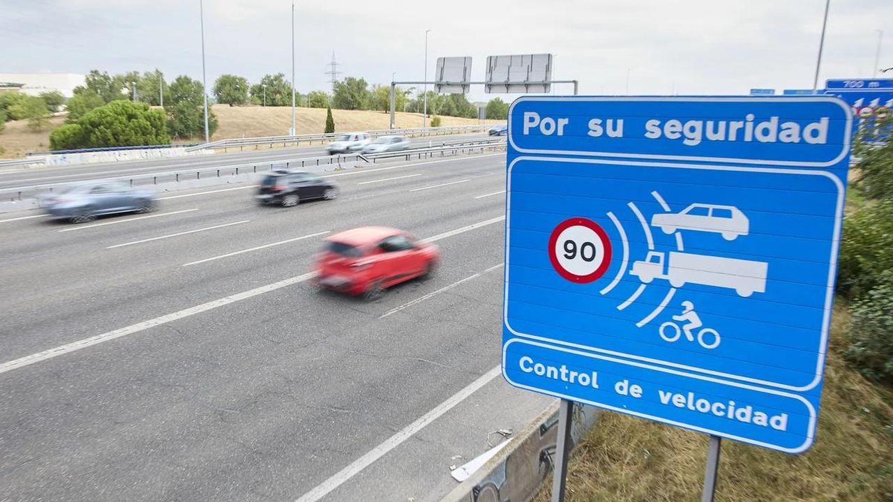

Leben in Spanien
Bußgelder in Spanien – was sie kosten und wie Sie weniger zahlen
Wie hoch Bußgelder in Spanien 2026 sind, wie Blitzer und Promillegrenzen funktionieren, was bei Mietwagen und deutschen Autos gilt und wie Sie mit 50 % Rabatt zahlen.
 Aleksandra Kobus · · 4 Min. Lesezeit
Aleksandra Kobus · · 4 Min. Lesezeit